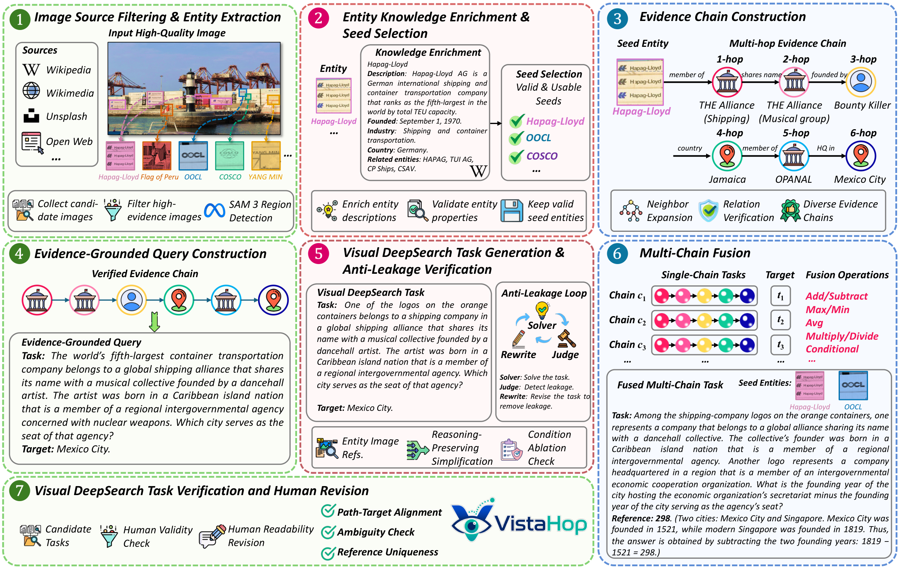
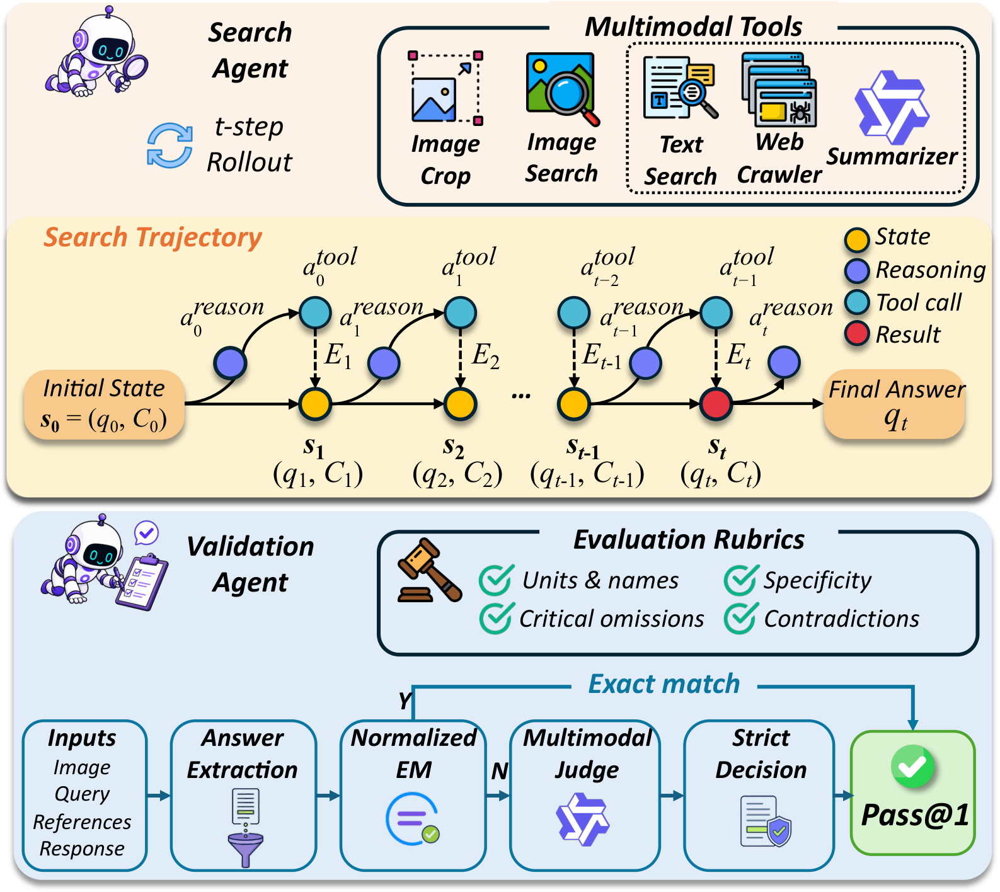
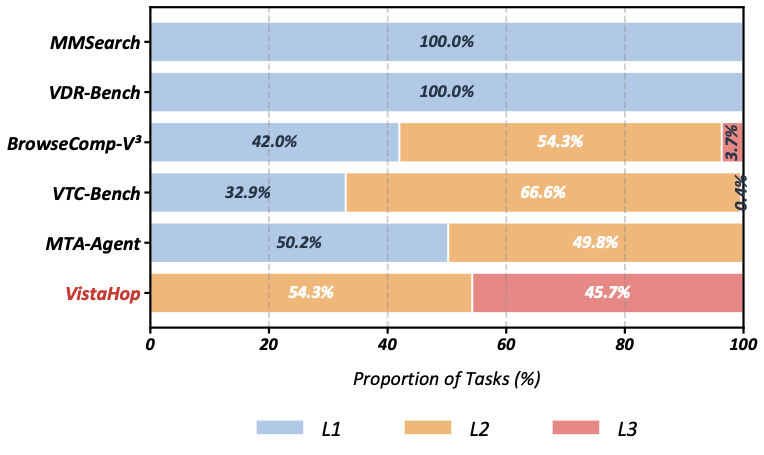

VistaHop benchmark
Evaluates long-horizon evidence traversal, repeated image inspection, and evidence-grounded response generation through multi-chain Visual DeepSearch tasks.
A benchmark for repeated image inspection, visual-anchor grounding, and long-horizon evidence traversal across different visual regions.
†Corresponding authors
Overview
Visual DeepSearch tasks require multimodal large reasoning models to resolve complex visual queries by repeatedly inspecting image regions, grounding reasoning in visual evidence, and connecting fine-grained clues across multiple steps. However, existing benchmarks primarily evaluate single-step visual understanding or isolated visual-query response generation. They have limited difficulty, limited search horizons, and single-pass image inspection, and thus fail to evaluate models' ability to iteratively revisit visual evidence and reason across multiple steps.
We introduce VistaHop, a benchmark designed specifically to evaluate Visual DeepSearch. It evaluates repeated image inspection, visual-anchor grounding, and long-horizon evidence traversal across different visual regions. VistaHop comprises 300 images, 25 visual search scenarios, and 350 Visual DeepSearch tasks. We also propose VistaArena, a unified evaluation framework that supports tool-based interactions, including visual retrieval, image inspection, and evidence-grounded reasoning. Experiments show that even state-of-the-art MLRMs remain far from solving VistaHop, with the best-performing model, SenseNova-MARS-32B, achieving only 24.31% Pass@1. These findings highlight the importance of specialized benchmarks and improved agentic methods for Visual DeepSearch.
Evaluates long-horizon evidence traversal, repeated image inspection, and evidence-grounded response generation through multi-chain Visual DeepSearch tasks.
Generates visually grounded, long-horizon tasks while controlling data quality and reducing text-only shortcuts.
Shows that current models remain limited in long-horizon evidence traversal, visual evidence revisiting, and multi-anchor evidence fusion.
Benchmark

Figure 2 Overview of the VistaHop Construction Pipeline.
Filter high-resolution images, detect entities, and enrich visual anchors.
Build evidence chains and write indirect, evidence-grounded queries.
Remove shortcuts, verify clue necessity, and fuse multiple chains.
Human reviewers check uniqueness, correctness, and readability.
Evaluation

Figure 7 Overview of VistaArena. The Search Agent performs iterative visual inspection, retrieval, and evidence-grounded reasoning; the Validation Agent evaluates the resulting trajectory and final answer.
Retrieve external facts and condense relevant webpage evidence.
Use reverse-image evidence to resolve uncertain visual anchors.
Inspect local regions for small logos, text, objects, and symbols.
Judge semantic correctness and evidence support with Pass@1.
Experiments
The best-performing model, SenseNova-MARS-32B, reaches only 24.31% Pass@1 under Search+Crop. The human baseline reaches 78.38%.

VistaHop consists of L2 and L3 tasks, with 45.7% categorized as L3, placing substantially greater emphasis on long and compositional evidence chains.
Citation
@misc{he2026vistahop,
title = {VistaHop: Benchmarking Long-Horizon Visual DeepSearch},
author = {He, Hang and Yue, Chuhuai and Dong, Chengqi and Wan, Chengcheng and Su, Ting and Sun, Haiying and Chai, Jiajun and Wang, Xiaohan and Yin, Guojun},
year = {2026},
eprint = {2606.03273},
archivePrefix = {arXiv},
primaryClass = {cs.CV}
}